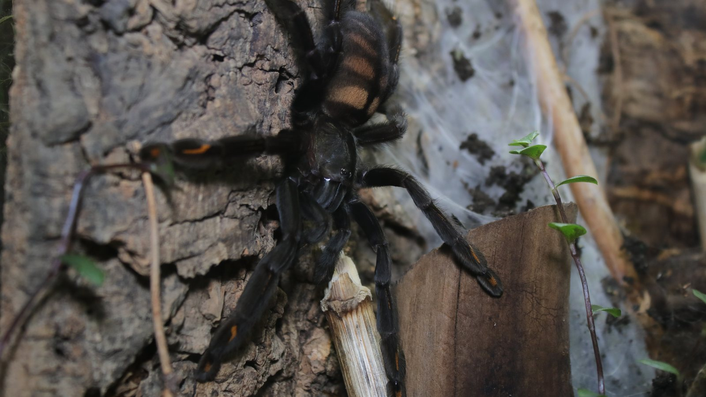
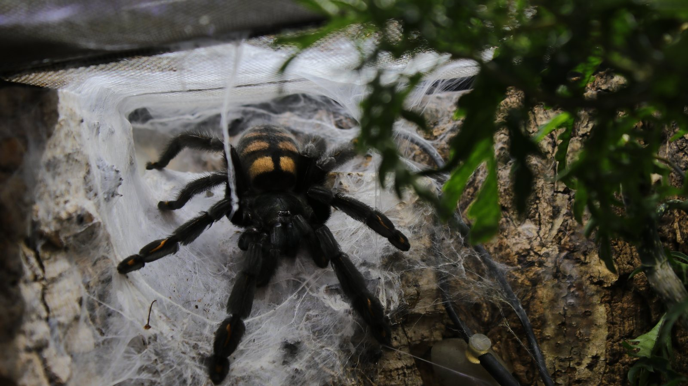
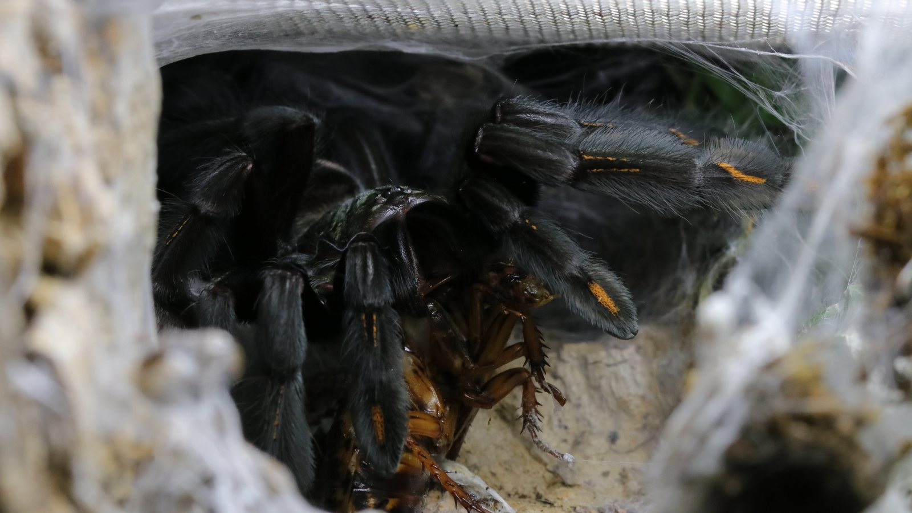

An arboreal Venezuelan tarantula that uses bark crevices, hollows, and silk-lined elevated retreats. Its body shape and movement suit climbing and concealed routes.
Species profile · Clara
Psalmopoeus irminia
Meet Clara
Clara is the Psalmopoeus irminia currently in my care. Her photograph is one of the most atmospheric in the collection, placing her face between dark foliage and soft green light.

Scientific namePsalmopoeus irminia
FamilyTheraphosidae
Native rangeVenezuela, Guyana and Brazil
TaxonomyAccepted species
SexConfirmed female
In the wild
Natural history.
Orange markings on a dark body break up the silhouette. Clara's foliage-rich photographs show how quickly an arboreal spider can disappear into layered cover.
Clara has vertical structure, a secure retreat, and foliage for cover. Her feeding and molt observations are presented as an individual record below.
Taxonomy and range
Psalmopoeus irminia is an accepted theraphosid from northern South America, with the World Spider Catalog recording Venezuela and Guyana. The species belongs to an arboreal lineage whose body proportions and foot pads support rapid movement on bark and other vertical surfaces.
Burrows, shelter, and activity
The spider uses cavities, splits behind bark, and silk-lined tubes that join vertical cover to nearby foliage or substrate. Juveniles may stay closer to the ground, while larger animals can make greater use of elevated retreats; a simple ‘tree spider’ label misses that flexibility.
Feeding ecology
Clara is best understood as an ambush predator operating from a concealed vertical route. Arthropods moving across bark or silk provide the cue for a fast capture, followed by withdrawal into cover. Her own feeding history remains separate from the sparse field diet record.
Defence, senses, and movement
Psalmopoeus does not have urticating hairs. Speed, concealment, and a defensive posture when cornered make opening the enclosure the highest-risk moment, not the animal sitting quietly inside its retreat.
Life in the collection
Meet Clara.
Clara is the individual behind this profile. Her foliage-rich enclosure photography and personal Codex record add a keeper’s view to the documented range and taxonomy of Psalmopoeus irminia.



From Instagram
Posts & reels.
From the channel
Related viewing.
Introvertebrates on YouTube
Meet Clara: The Venezuelan sun tiger
A full introduction to Clara and Psalmopoeus irminia on the Introvertebrates channel.
Personal observations
From the Codex.
Introvertebrates Codex
Clara · care history
A privacy-safe summary of this resident’s time in care, feeding outcomes, molts, and measurements. These are observations from the Introvertebrates collection, not species-wide averages.
Awaiting a privacy-reviewed Codex export. No invented statistics are shown.
Never published here: raw notes, record IDs, seller or breeder details, enclosure identifiers, local file paths, or exact private event dates.
Continue exploring
Related profiles.


Read further
Sources.
- World Spider Catalog — Psalmopoeus irminiaView the source.